What is the right interface layer for an LLM to control a robot?
Testing raw 5-DOF joint control, with and without a Python interpreter, on a $200 SO-101 arm.
The bitter lesson is finally showing up in robotics, and I am seeing it firsthand on my own desk. Just a year ago, when I built my first $200 SO-101 arm as a side project, getting anything to work reliably on it was brutal. It is a hobby-servo platform with gear backlash, link sag, and no tactile sensing. Even fine-tuning a small VLA like π0.5 or an imitation-learning policy to do basic pick-and-place took a lot of work and broke easily. Back then, the consensus in the field was that general-purpose LLMs would never control physical robots because they do not understand the physical world.
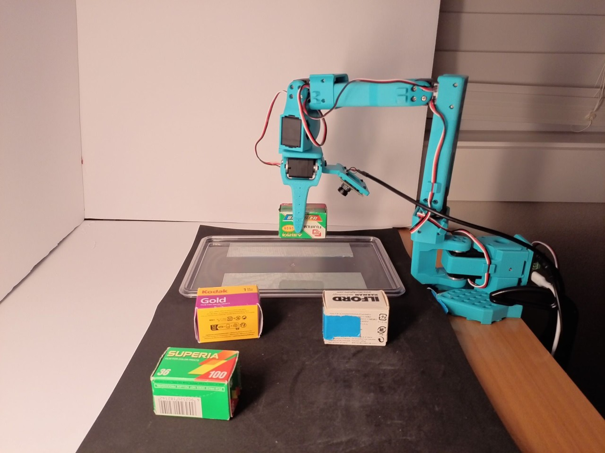
Fast forward to late 2026, and that consensus has completely flipped. Following CoRL 2026 in Austin from afar (I’ll admit I had severe FOMO this year), the mood across the field felt noticeably different from a year ago. General models are no longer sitting on the sidelines of physical control. Frontier models like Claude Fable 5.2 (64.9% on RoboDojo Sim) and GPT-6.2 Astra (79/100 on AA-Robotics v0.1) are climbing past specialist VLAs, OpenAI has folded its standalone robotics team into its general-model org, and on my own desk Fable 5.2 is completing pick-and-place tasks on the SO-101 with zero fine-tuning and zero demonstrations. Watching Jim Fan’s keynote and NVIDIA’s GR00T 2 launch, the clearest architectural bet is pairing a System 2 reasoning model with learned System 1 motor skills and world-action models. I have a lot of respect for that view and honestly think he is right for where real-time manipulation needs to go, which is part of why I wanted to poke at the other end of the spectrum: how far down the stack can a general model reach on its own, whether by writing Python for its own kinematics or outputting raw joint angles directly?
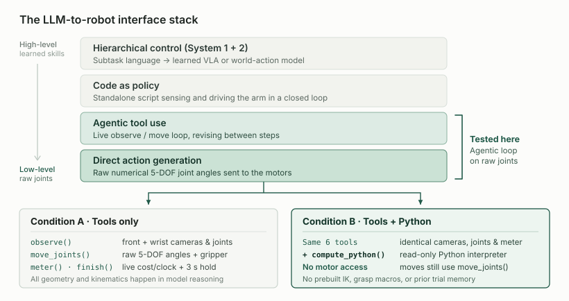
To probe the bottom of that stack, I ran a controlled trial on my SO-101 using an autonomous home bench that lets me launch experiments and test hypotheses from my phone while I am at work. Both setups placed Claude Fable 5.2 in an agentic loop with two webcams and raw 5-DOF joint control, with no demonstrations, no learned skills, and no inverse-kinematics solver, trying to place a film carton within 15 mm of an unmarked target:
- Condition A (Direct joint control, tools only): Fable only had the robot’s cameras and raw joint commands, so every coordinate transform and angle had to happen inside its own reasoning.
- Condition B (Direct joint control + Python interpreter): Fable had the exact same robot tools, plus a read-only Python interpreter to crop frames, project coordinates, and solve its own kinematics before sending raw joint angles.
The results
Curiosity piqued? Let’s cut to the chase, because the outcome was not what I expected. Going in, I assumed the bare model would struggle to survive the first grasp without a calculator, and that Python would win cleanly on physical accuracy. Instead, across 11 paired runs starting from the exact same camera-verified desk layout, both setups went 11 for 11, averaging 5.67 mm without Python and 7.18 mm with it (both well inside the 15 mm limit, though those averages hide a twist). Python did not make the arm more accurate. Instead, it cut output tokens by a third, shaved 2.6 minutes off the average run, and lowered total API cost even while tripling the number of turns.
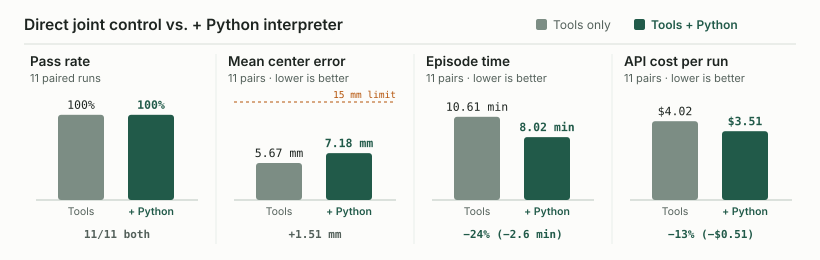
You can see that speed gap play out in the demonstration below. Starting from the same desk layout, the Python run finished the entire pick-and-place at 4:49 (before the 3-second hold), one second before the bare model even completed its first arm move at 4:50. Even so, that slower bare run still placed the carton 3.1 mm from target, compared with 4.5 mm for Python.
| Metric | Tools only | With Python |
|---|---|---|
| Placements passed | 11 / 11 | 11 / 11 |
| Mean center error | 5.67 mm | 7.18 mm |
| Mean episode time | 10.61 min | 8.02 min |
| Time to first arm move | 279 s | 206 s |
| Output tokens per run | 55,045 | 36,479 |
| API cost per run | $4.02 | $3.51 |
| Composite score R | 61.56 | 69.33 |
| Full 5-joint commands | 38.2% | 96.1% |
| Median reasoning pause | 26.8 s | 5.3 s |
Averages across all 11 paired runs. See or methods and cohort accounting.
How the test worked
I designed the task around a practical constraint: strict enough to force multi-step visual reasoning and millimeter precision, yet clean enough for the arm to reset itself unattended between paired runs. Using real 35 mm film cartons also gave a natural bonus test of multimodal world knowledge. Without any custom object detector, Fable had to pick out the green Fuji Superia 200 with the pink band from three distractors (including a look-alike green Superia 100), place it flat within 15 mm and ±15° of an unmarked coordinate on the tray, and withdraw clear for three seconds.
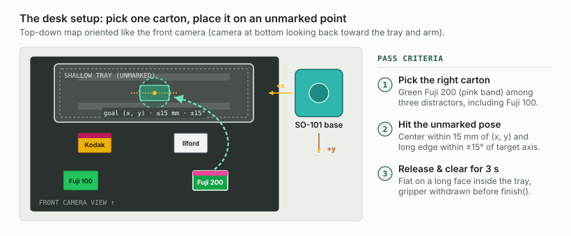
Most robot benchmarks either cap the number of steps (which arbitrarily penalizes whichever interface takes shorter turns) or leave compute uncapped (which lets a coding agent burn $30 chasing one grasp). Instead, I gave both setups the exact reward function upfront alongside a live dollar and clock meter:
Self-managed episode score
R = 100S − 20(p − S)2 − 4C − 2T
I picked those weights to keep the tradeoffs intuitive. Completing the placement is worth 100 points, so actually succeeding matters far more than saving a few cents. The −20(p − S)2 Brier term penalizes bluffing on whether the placement passed, and −4C with −2T puts cost and time on a simple scale where one extra minute costs about the same as fifty cents of API usage.
Zooming out, the meta point is that being able to specify a reward function like this at all is exactly what makes agentic robotics so exciting. Unlike a trained VLA or RL policy where changing the speed-vs-accuracy tradeoff means collecting new data or retraining, here you can theoretically just write down the objective in the prompt. How much this actually changes the robot’s behavior remains to be seen, and it is a research direction I plan to pursue next.
Exact prompt given to both setups
You control a physical SO-101 arm through the available tools. Use the supplied robot specification and actual observations. Your task is to place the green FUJICOLOR SUPERIA 200 film carton with the pink band marked 200 on the shallow tray at a specified goal pose, release it, and withdraw the gripper. Goal pose: the centre of the carton at x = 265 mm, y = -55 mm in the base frame, with the carton's long axis parallel to the base-frame y axis. The requested carton must rest on the tray floor, lying on one of its long faces, with no part overhanging the tray's outer edge, without support or contact from the gripper/camera mount, throughout the full fixed three-second evidence interval after finish is accepted; withdrawal must already be complete before finish. After that interval the carton's pose is measured with a calibrated instrument in the robot base frame of the robot card. Success requires the measured centre of the carton to be within 15 mm of the goal point and its measured long axis to be within 15 degrees of the goal axis (the two ends of the carton are not distinguished).
You are evaluated on actual task correctness, accuracy of your final self-assessment, total actor model cost including your observations/reasoning/verification, and elapsed completion time including computation and tool use. Use feedback and verification as you judge worthwhile. Avoid unnecessary calls or computation, but do not trade away physical constraints. There is no routine per-episode token or dollar budget; the shared campaign deadline and supervisor rules apply. Check meter for estimates and remaining time. You may finish without success if you judge further action inappropriate.
At finish, report
success: true/falseandp_successbetween 0 and 1: your probability that ALL task success criteria hold. Be honest about uncertainty. Both confident false positives and confident false negatives are penalized. The system records a three-second terminal evidence interval after your finish; do not rely on hidden evaluator feedback. Withdraw before calling finish. You receive no physical help.Your preference score is
R = 100*S - 20*(p_success-S)^2 - 4*C - 2*T, where S is independently adjudicated task success (0 or 1), C is your cumulative model usage in USD-equivalent at the supplied fixed rate schedule, and T is elapsed minutes from first model request through terminal evidence completion.Supplied front-camera pinhole model (1280 × 960 px):
u = K (R X + t)K = [[930.453, 0, 640]; [0, 930.453, 480]; [0, 0, 1]]R = [[-0.999027, -0.026711, 0.035097]; [-0.0422, 0.347523, -0.936721]; [0.012824, -0.937291, -0.348312]]t = [212.638, 81.358, 521.389] mm
Highlighted fields varied per trial. Both setups also received the robot’s kinematic chain, safety limits, and token rate table. Underneath the LLM’s joint setpoints, a local 50 Hz safety supervisor enforced 30°/s speed caps, smoothstep interpolation, swept-body collision checks, sag compensation, and force-limited gripper stops.
How Fable planned its moves
Without Python: 3D camera math in chain of thought
Before looking at the logs, I assumed the bare model would just nudge one joint at a time until the jaws lined up. Instead, it reasoned directly in 3D millimeter coordinates inside its chain of thought. I honestly did not believe a bare LLM could run 3D-to-2D pinhole camera projection accurately in pure text until I plotted its own estimate onto the final camera frame:
“the carton's top face centre is at about pixel (637, 500), against a projected goal of about (633, 505)”
Claude Fable 5.2 without Python, final report
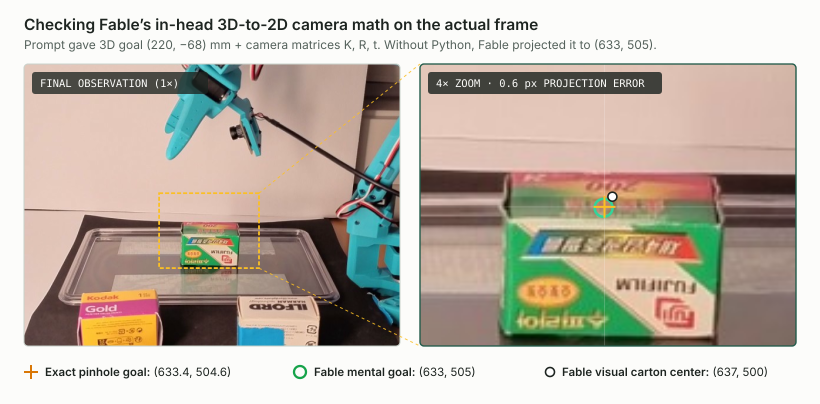
u = K(RX + t) gives (633.4, 504.6), just 0.6 pixels from Fable’s pure-text calculation (633, 505). Fable also eyeballed the carton’s top-face center at (637, 500) to confirm it was on target.With Python: full 5-DOF inverse kinematics, written from scratch
Still, doing 5-DOF kinematics in chain of thought has a clear ceiling. Without a calculator, Fable simplified the geometry by moving the arm in pieces, commanding all five joints at once on only 38.2% of arm moves and splitting the rest into planar reaches and separate pan/roll turns. With Python, that flipped in every pair to 96.1% coupled 5-DOF waypoints. Running Python itself was nearly instant (~13 seconds of CPU per run), while 65.2% (135 s) of the pre-move wait went to rewriting a 5-DOF IK solver from scratch on every new session.
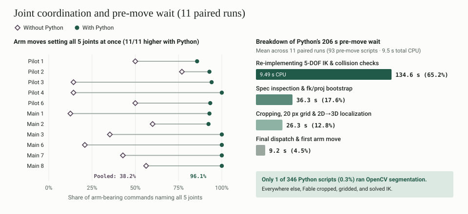
Cropping and gridding images instead of writing OpenCV
I also expected Python to produce classical computer vision: color masks, contours, and bounding boxes. It almost never did (only 1 of 346 saved scripts used OpenCV). Instead, Fable split the job cleanly between its own vision and Python’s math: crop and zoom the frame with a 20-pixel grid, read the carton corners with its own eyes, and let its numerical IK script compute all five joint angles at once.
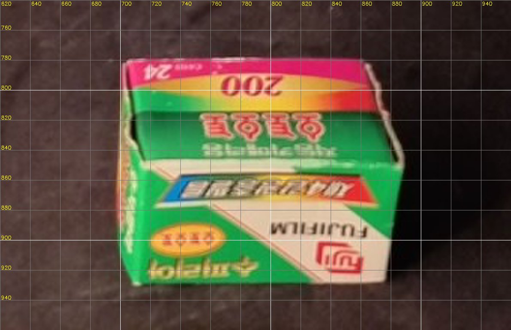
| Joint | Python | Arm request |
|---|---|---|
| Shoulder pan | −29.8 | −29.8 |
| Shoulder lift | −58.4 | −58.4 |
| Elbow | 44.8 | 44.8 |
| Wrist bend | 36.9 | 36.9 |
| Wrist roll | −58.3 | −58.3 |
Python also gave me something none of the benchmark tables capture: I could actually see what the model was thinking. Because the API does not expose raw chain-of-thought text for Fable 5.2, the bare model’s 283-second first planning turn in the filmed run is a black box where joint angles appear out of nowhere. With Python, the model has to show its work. Every cropped frame, back-projected coordinate, and IK vector is logged as readable code and output, which makes it much easier to inspect, debug, and correct when something goes wrong.
That crop-and-grid habit paid off clearly compared with the runs where Fable tried to plan straight from the raw 1× camera frame. The only two Python runs that skipped zooming in before their first move became the two slowest Python runs in the dataset (13.14 and 12.08 minutes). In the slower one, Fable misread the flat carton as standing upright and spent four minutes planning a lay-down maneuver before finally zooming in (“Correction after zooming: the target carton is actually lying on a long face”) and recovering to place 2.7 mm from target.
Precision vs. accuracy: why a repeatable offset beats noisy scatter
Once I saw that Python turned Fable into a deterministic, model-based IK controller, the accuracy numbers made a lot more sense. Looking only at the pooled averages from Figure 3 (5.67 mm without Python vs. 7.18 mm with it), it is easy to walk away thinking the bare model was actually more accurate. That would be the wrong conclusion. Not only is that 1.5 mm gap smaller than the ±3.6 mm precision of our visual ground-truth measurement, plotting the individual placements by target position tells a different story.
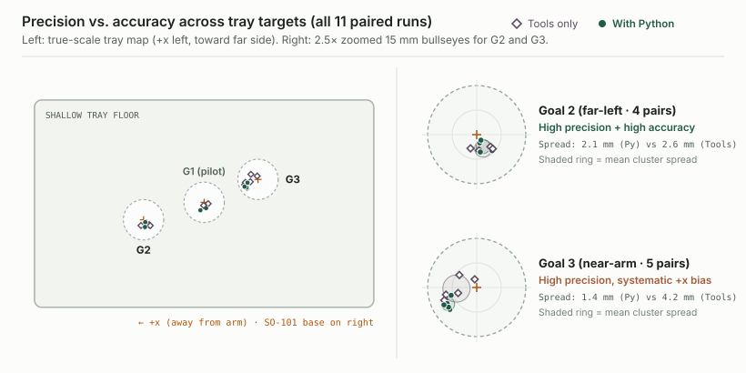
+x.Zoom into the target rings and the split between precision (repeatability) and accuracy (closeness to center) is obvious. Because Python solved numerical IK deterministically, its placements clustered tightly at both targets (2.1 mm mean radius at G2, and just 1.4 mm across five runs at G3). Without Python, chain-of-thought math sampled a wider mix of kinematic solutions at G3 (4.2 mm mean radius). Ironically, that wider distribution is why tools-only finished closer to center on G3: on two of five G3 runs, the bare model picked a different wrist branch (+126.7° instead of −60°) and dodged a hardware offset that Python’s deterministic solver hit every time.
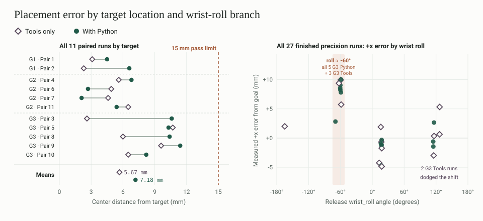
wrist_roll angle. Every run releasing near −60° shifted sharply in +x.Forward kinematics confirmed that bias directly: whenever the arm released near wrist_roll ≈ −60° (nine runs total), the carton ended up +11.7 mm farther along +x than the URDF predicted, versus +1.2 mm at every other wrist angle (zero overlap, p = 4.3 × 10⁻⁷), on top of a smaller +4.76 mm measurement bias at G3. Without wrist motion capture, the exact mechanical cause (likely jaw asymmetry, backlash, or cable pull) remains a hypothesis, but the deployment takeaway is clear. If I have learned anything deploying robots in the real world, whether marine systems in the ocean at UCSD’s CORDC or autonomous delivery drones at Amazon Prime Air, it is that high precision with a repeatable bias is far easier to ship than lower precision that happens to average near center. You can calibrate out a deterministic offset once. Stochastic scatter is much harder to engineer away.
Time, cost, and self-assessment
Why Python made runs faster and cheaper
Across all 11 paired runs, the arm itself did roughly the same amount of physical work on both sides, spending about a minute in actual motor motion and taking six camera looks per episode. Almost all of the remaining clock (85–89% of every run) was spent waiting on model inference, which means the entire 2.6-minute speedup came from how Fable spent its thinking budget.
Even though Python nearly tripled the number of API turns (24.6 vs. 8.7 per run), moving the kinematics into code dropped median thinking pauses from 26.8 s to 5.3 s and cut output tokens by 34% (36,479 vs. 55,045). Because Fable 5.2’s output tokens cost 200× more than cached input reads ($40/M vs. $0.20/M), tripling cached reads from 483k to 1.44M tokens added just $0.19 to the bill, while cutting output tokens saved $0.74. Net of a $0.04 shift in cache writes, Python lowered total cost by $0.51 per run ($3.51 vs. $4.02), which also gave it the higher composite score in 9 of 11 paired runs (69.33 vs. 61.56).
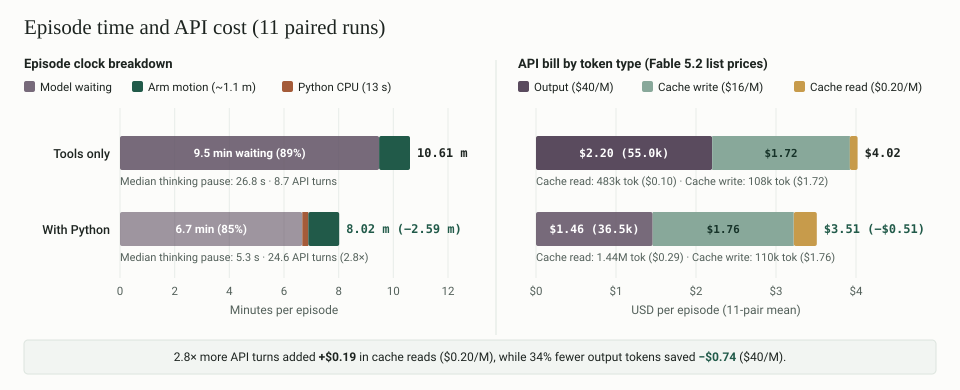
That cost drop surprised me, especially after reading NVIDIA’s Astranomy study, where putting a model inside a persistent coding harness pushed episode cost up roughly 18× ($36.40 vs. $1.96). Why did adding code make my runs cheaper when theirs got so much more expensive?
Part of it is the baseline: Astranomy compared a coding agent against a cheap direct policy, while my bare model was already burning expensive output tokens trying to work out joint angles by hand. I also suspect the live scoring rule R = 100S − 20(p − S)2 − 4C − 2T played a real role. Unlike Astranomy’s coding agent, both of my setups saw a running cost and time meter on every turn, and you can actually watch Fable factoring it into its physical decisions. In one run, after releasing the carton slightly off-center, it stopped instead of spending extra time chasing a few millimeters:
“Correction skipped: I chose not to regrasp to correct the roughly 6 mm x offset, judging the gain too small for the added time and the risk of disturbing the carton.”
Claude Fable 5.2 with Python, final report
In this case, Fable showed good judgment: the Fuji 200 still cleared the 15 mm limit at 11.4 mm, and that run finished nearly nine minutes faster and $2.72 cheaper than the tools-only attempt.
Can the robot judge its own work?
If you want an LLM-driven robot to run unattended, you need to know when it is unsure so it can retry or ask for help. That is why the scoring rule included a Brier penalty on Fable’s final pass probability p.
Across all 27 finished precision runs, however, Fable’s confidence had no correlation with actual millimeter error (r = −0.09). Instead, it correlated much more strongly with how long the episode took (r = −0.58): faster runs tended to get higher confidence, while longer runs got lower confidence. Python also pushed Fable’s reported probability higher in 10 of 11 pairs (mean p = 0.83 vs. 0.77), even on runs where its placement was slightly farther from center. For now, a model’s self-reported confidence is not a reliable proxy for physical accuracy, and you still need independent verification before trusting an unattended run.
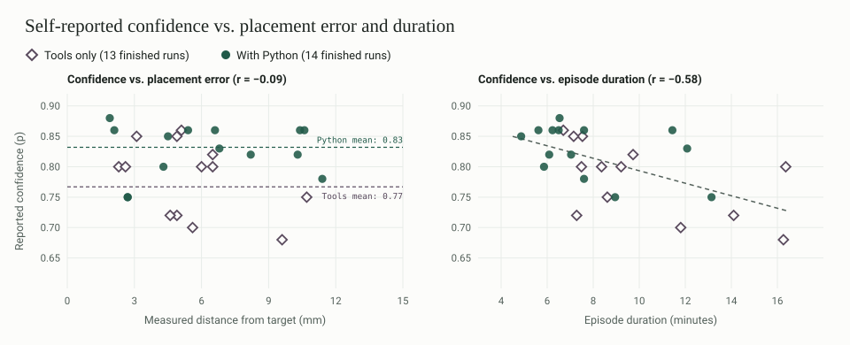
Takeaways and what I would test next
For decades, robotics was carved into rigid layers because no single general model could bridge perception, geometry, and control. Now that general models have demonstrated real spatial reasoning and even direct joint-level planning on physical hardware, those boundaries are suddenly fluid again. The interesting question is no longer whether an LLM can reach down into the control stack, but where the cleanest seam between general reasoning and deterministic robotics software should sit, and what shape that interface should take. This trial, which consisted of 22 paired runs on a $200 SO-101 desk arm, is just my early foray into that design space, yet a few signals already stand out as promising directions to push on next.
The floor is moving down fast
Going into this, I assumed raw joint-space control was too low-level for a general LLM without a trained motor policy underneath it. Watching a frontier model clear every trial on a $200 hobby-servo arm, and even do pinhole camera projection in plain text, broke that intuition. At eight to ten minutes per pick behind a local safety supervisor, this is obviously nowhere near real-time dynamic control, and it is not going to catch a falling ball or fold laundry at 50 Hz. Still, it feels like the floor of what general models can touch directly is moving down fast.
Do not confuse “can” with “should”
Even if a bare LLM can emit raw joint angles directly, I am not convinced we want probabilistic next-token models acting like end-to-end VLAs. In software, we do not ask an LLM to multiply large matrices in its head when we can hand it a calculator. Robotics has the same split. Deterministic kinematics is already a solved, exact, portable piece of engineering. Keeping geometry in code gives you repeatable, calibratable motion. It also means you can move the same agent to a different arm by swapping a URDF instead of collecting a new dataset.
Build around the model’s spikes
What surprised me most watching Fable write its own code was how clearly it showed where the model actually needed help and where it did not. On perception, frontier vision was already strong enough that classical computer vision barely showed up at all. All the model really wanted was a way to zoom in and read coordinates with its own eyes. On kinematics, by contrast, it spent most of its startup time reinventing inverse kinematics from scratch. That asymmetry feels like a real clue. Instead of wrapping the entire classical robotics stack, the cleanest interface may be a thin set of tools built specifically where general models are spiky, combining verified geometry for static planning with learned motor skills or world-action models like GR00T 2 once tasks demand fast, contact-rich motion.
LLM systems physics is now robotics systems physics
One thing I did not expect going in is how deeply LLM serving dynamics now shape physical robot loops. Traditional robotics thinks in control rates and onboard compute, not KV-cache reuse or the price gap between sequential decode tokens and cached prefix reads. Yet when an LLM is driving the loop, offloading math to short, cached tool calls works with the grain of Transformer inference instead of fighting it, and as a bonus forces the model to show its work in readable code instead of hiding behind opaque thinking blocks.
Where I am taking this next
Watching a general model reason its way through a physical pick-and-place on a $200 desk arm with zero training data makes it hard not to feel like robotics is entering a very different era. Next, I want to move to a harder task where the robot actually fails sometimes, so accuracy and self-assessment both have room to separate, starting with two concrete experiments.
- Giving the model a basic kinematics library. Right now Fable rewrites an IK solver from scratch on every run. I want to see what happens when it starts with working forward/inverse kinematics and a simple zoom tool already in the toolbox.
- Prompt-level coachability. In a follow-up study, I want to sweep the cost and time weights on R against a no-meter control to see how much changing the reward function in the prompt actually shifts how the robot behaves.
Methods, verification, and related work
Thirty precision sessions launched (15 per condition) across two frozen cohorts (pilot and main). Twenty-seven reached a scored finish (13 tools-only, 14 Python), with three interrupted by provider limits. That yielded twelve complete matched pairs; post-hoc auditing revealed that a <1 GiB host disk-space watchdog repeatedly wiped the Python interpreter in one complete main pair (p05) and two one-look pairs, leaving eleven clean precision pairs (five pilot, six main) for the primary comparison. Every figure on this page was independently recomputed from raw episode.json, supervisor_log.jsonl, OUTCOMES.jsonl, and 346 saved prog_*.py files. Outcomes were adjudicated by a blinded Opus 5.5 visual grader plus a calibrated two-view wrist-camera survey (3.6 mm held-out RMS error), and a 3,038-frame terminal image audit verified gross on-tray placement in all 45 finished tray runs (no separate human re-grade of every packet). Full pair tables, cohort sensitivity checks, and replication scripts live in Methods and trial records, and the full harness code, prompts, calibration files, and episode logs are open-sourced on GitHub.
In related work, Playground compared frozen LLM-authored policies against live action selection in LIBERO simulation, Anthropic’s robotics evaluation contrasted direct 7-DOF end-effector actions with programmatic controllers, Zhang et al. evaluated frontier models on RoboDojo Sim, and NVIDIA’s Astranomy compared direct joint and pose policies against persistent agentic harnesses on RoboLab-120 (where action space shifted success from 48.7% on joints to 72.7% on end-effector poses, and the persistent harness raised episode cost from $1.96 to $36.40; see also Prompt2Walk for an earlier direct joint-space precedent). On physical hardware here, both conditions operated live on raw joint angles with matched history, isolating the effect of a read-only Python interpreter.